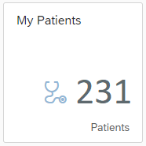

Beyond the basic binding concepts described in the previous chapter, there are some more advanced concepts that will be explained in this section.
Step 3.1 Slicing
The properties of a FHIR® resource can have different cardinalities. A property with a 1:N (one-to-many) relationship formally contains a collection. The items of a collection can be addressed by their indexes, for example, /Patient/XYZ/name/0/family. However, addressing the items of a collection by their indexes is unreliable because the index of an item can be affected, for example, by when the item was stored or last updated. So, an application developer should not implement anything based on the index of an item of a collection. Therefore, the FHIR® specification introduces a kind of secondary index. For example, to specify whether the name of a patient is the patient's official name, nickname, or maiden name, there is a property called use. This property is a secondary index in the collection because the value of this property is unique within the collection. To enable the use of a secondary index within a UI, the UI5 FHIR Model includes a concept called slicing. For a UI5 element bound to a property that can be addressed by a secondary index, the syntax is as follows: /path/[secondaryIndex=myIndex]/property. For example, a UI5 element bound to the official family name would have the following syntax: /Patient/XYZ/name/[use=official]/family. This feature enables application developers to write stable UIs without knowing the order of the collections.
Example: Binding the Value of an Input Field to the Official Family Name of a Patient.
<Page id="patientPage" binding="{/Patient/123}">
<Input id="myLastName" value="{name/[use=official]/family}">
</Page>
To filter the aggregation, developers can also use sap.fhir.model.r4.FHIRFilterOperators within the binding path.
This is useful, for example, for references where you would like to get multiple entries of the aggregation.
<HBox binding="{/Coverage/123}">
<List items="{payor/[reference StartsWith Organization]}"> ...
</List>
</HBox>
Further the developer is allowed to use AND-Operators within the binding path. The use case could be to display a specific address entry of a patient. Here only the address should appears where the property use is equal to home and type is equal to postal.
<HBox binding="{/Patient/123}">
<Text text="{address/[use=home & amp;& amp; type=postal]/city}">
</HBox>
Or in JS-Code .bindText("address/[use=home && type=postal]/city");
Further the developer is allowed to use OR-Operators within the binding path. The use case could be to display a specific address entry of a patient. Here only the address should appears where the property use is equal to home or type is equal to postal.
<HBox binding="{/Patient/123}">
<Text text="{address/[use=home, type=postal]/city}">
</HBox>
Or in JS-Code .bindText("address/[use=home, type=postal]/city");
It's also possible to comboine AND- and OR-Operators to more complex expressions, like following scenario. Here only the address should appears where the use is equal to home or the type starts with p but is not equal than physicial.
<HBox binding="{/Patient/123}">
<Text text="{address/[use=home, type StartsWith p & amp;& amp; type NE physicial]/city}">
</HBox>
Or in JS-Code .bindText("address/[use=home, type StartsWith p && type NE physicial]/city");
This concept is also reused for _revinclude bindings, as you can see in the example below. Therefore the key has to contain the prefix pattern revreference/ plus the resource type (PractitionerRole in the example). The value is the reference property path (practitioner/reference in the example) in the resource type.
*Example: _revinclude Binding *
<Table id="List" items="{ path: '/Practitioner' , parameters: { request: {_revinclude: 'PractitionerRole:practitioner', '_has:PractitionerRole:practitioner:organization' : '2523'}}}">
<columns>
<Column width="12em">
<Text text="Practitioner Givenname" />
</Column>
<Column width="12em">
<Text text="Practitioner Familyname" />
</Column>
<Column minScreenWidth="Tablet" demandPopin="true">
<Text text="ResourceType" />
</Column>
</columns>
<items>
<ColumnListItem>
<cells>
<Text text="{name/0/given/0}" />
<Text text="{name/0/family}" />
<VBox items="{[revreference/PractitionerRole=practitioner/reference]}">
<Text text="{id}" />
</VBox>
</cells>
</ColumnListItem>
Step 3.2 References
The FHIR® specification allows references on properties of a FHIR® resource. This means that rather than storing real data, the property stores a link to another resource. The UI5 FHIR Model allows binding to a reference that is not part of the FHIR® resource. The syntax for this binding looks as follows: First of all, the context has to be bound to the resource itself. Therefore, you need to modify the existing binding syntax as follows:
{ path: 'resourceType', parameters: { request: { _include: 'resourceType: searchParameterReference'}}}
- path: The path parameter contains the binding path.
- parameters: The parameters object holds any parameters that should be passed to the binding.
- parameters.request: The request object contains parameters that should be directly added to the URL of the request triggered by the binding.
- parameters.request._include: The include parameter specifies which references of the bound resource should be requested and stored. If a single reference should be included, the syntax looks as follows:
{ _include: 'resourceType: searchParameterReference'}. If more than one reference should be included, the syntax is:{ _include: ['resourceType: searchParameterReference', 'resourceType2: searchParameterReference2']}.
Example: Binding a List to the Official Family Names of all General Practictioners of a Patient
<Page id="patientPage" binding="{path: '/Patient', parameters: { request: { _id:'123', _include: 'Patient:general-practitioner'}}}}">
<List items="{123/generalPractitioner}">
<StandardListItem title="{reference/name/[use=official]/family}"/>
</List>
</Page>
Step 3.3 Reverse Chaining
The FHIR® specification provides reverse chaining with the _has parameter. Reverse chaining enables you to select resources based on the properties of resources that refer to them. The following syntax can be used:
{ path: 'resourceType', parameters: { request: { _has: 'resourceType:resourceProperty:property=value'}}
Example: Binding a List to All Patients with at Least 1 Oberservation with the Code 1234
<List items="{path: '/Patient', parameters: { request: { _has: 'Observation:patient:code=1234'}}">
<StandardListItem title="{name/[use=official]/family}"/>
</List>
Step 3.4 ValueSets
The FHIR® specification provides code values as ValueSets, which can be bound to the UI with the UI5 FHIR Model in two different ways.
Option A: In many cases, you want to display codes of a ValueSet associated with a resource. The UI5 FHIR Model detects that a code of a ValueSet is stored on a bound resource property. In that case, the UI5 FHIR Model requests the desired ValueSet from the FHIR® server and provides it to the UI.
Example: Binding a Page to a Specific Patient: Displaying the Gender of the Patient and Show All Available Gender Values
<Page id="patientPage" binding="{/Patient/123}">
<Select id="genderSelect" items="{gender}" selectedKey="{gender}" forceSelection="false">
<core:Item key="{code}" text="{display}"/>
</Select>
</Page>
Option B:
In other cases, the ValueSet should be displayed without its associated context. Therefore, the ValueSet can be bound to the UI with the url property of the ValueSet.
Example: Binding a List to All Available Gender Values
<List id="genderList" items="{path : '/ValueSet/Gender', parameters: { request: { url: 'http://hl7.org/fhir/ValueSet/administrative-gender'}}}">
<StandardListItem title="{display}"/>
</Select>
Step 3.5 Paging
The FHIR® specification provides a paging mechanism out of the box. Paging ensures that UI5 applications have to load and store only data that is actually needed. The UI5 FHIR Model supports the FHIR® paging mechanism natively without any further configurations on the binding side. UI5 provides controls that are paging-ready, for example, sap.m.Listand sap.m.Table. These controls can used in paging scenarios by configuring the growing properties: growing with value true and growingThreshold with the desired number of items that should be loaded from the server.
Example: Binding a List to All Available Patients but Show 5nly 5 at the First Time
<List id="patientList" items="{/Patient}" growing="true" growingThreshold="5">
<StandardListItem title="{name/[use=official]/family}"/>
</List>
Hint: Some controls support two different kinds of growing, which can be configured with the control property
growingScrollToLoad. One is the more button at the bottom of the control (false) or growing by scrolling (true).
Step 3.6 Binding to a Number of Resources
|  | There are use cases where the total number of resources should be displayed on the UI. The most common use case is the launchpad KPI tiles scenario (see picture aside). The *UI5 FHIR Model* provides a special binding syntax to enable binding on the total number of resources. The context of the UI5 control has to be bound to the desired aggregation, for example, `{/Patient}`, `{/Organization}`, or `{ path: '/Patient', parameters: { filters: [{ path : 'address', value1: 'germany', operator: 'Contains'}]}}`. Now, any controls that have access to this context can bind their value to `{%total%}`. |
Example: Creating a Tile and Show the Total Number of Patients
<GenericTile id="patientsTile" binding="{/Patient}" header="My Patients">
<TileContent unit="Patients">
<NumericContent value="{%total%}" icon="sap-icon://stethoscope"/>
</TileContent>
</GenericTile>
Step 3.7 Refreshing
An application might need to trigger a manual refresh of an existing binding. For example, there might be a button on the UI that refreshes a UI element after being selected. The UI5 FHIR Model supports the following refresh triggers:
Example: Refreshing a List
this.getView().byId("patientList").getBinding("items").refresh();
Example: Refreshing only the Third List Item
this.getView().byId("patientList").getItems()[2].getBindingContext().refresh();
Example: Refreshing a Page
this.getView().byId("patientPage").getObjectBinding().refresh();
Example: Refreshing a Tree
this.getView().byId("tree").getBinding("tree").refresh();
Example: Refreshing the Whole Model and All Bindings
this.getView().getModel().refresh();
Step 3.8 Binding of FHIR® operations
FHIR® permits the creation of operations on the FHIR® base URL (for example /fhir/R4/$myoperation), on resource types (for example, /fhir/R4/Patient/$myoperation) and on resource entities (for example, /fhir/R4/Patient/123/$myoperation).
The UI5 FHIR Model also supports the binding of UI elements to the output of FHIR® operations. If the operation returns a single or multiple resources, the following binding syntax can be used:
Example: Binding a List to a FHIR® Operation That Returns Multiple Patients
<List id="myList" items="{/Patient/$myoperation}">
<StandardListItem title="{gender} "description="{birthdate}"/>
</List>
Example: Binding the Value of an Input Field to the Official Family Name of a Patient Returned by a FHIR® Operation
<Page id="patientPage" binding="{/Patient/123/$myoperation}">
<Input id="myLastName" value="{name/[use=official]/family}">
</Page>
A FHIR® operation can also return a collection of versions of a specific FHIR® resource. Therefore, every entry in the bundle has the same ID. To bind a UI element to such a FHIR® operation, it's neccessary to specify the unique boolean to differentiate the bundle entries. This can be achieved by using the unique binding parameter.
Example: Binding a List to a FHIR® Operation That Returns Multiple Versions of a Patient
<List id="myList" items="{path: '/Patient/1234/$myoperation', parameters: { unique: true}}">
<StandardListItem title="{gender} "description="{birthdate}"/>
</List>
Step 3.9 Filtering in FHIR® Resources
sap.fhir.model.r4.FHIRFilter, which extends sap.ui.model.Filter, and necessary helper classes support the special syntax that the FHIR® query language uses because of the different search parameter data types. The following example shows how these classes are used.
Example: Filtering a Binding with FHIR®-Specific Filters
sap.ui.define([ ...
"sap/ui/model/Filter",
"sap/fhir/model/r4/FHIRFilter"
"sap/fhir/model/r4/FHIRFilterOperator",
"sap/fhir/model/r4/FHIRFilterType",
...
]
...
oBinding.filter(
[
new FHIRFilter({
path : "birthDate",
operator : FHIRFilterOperator.EQ,
valueType : FHIRFilterType.date,
value1: "2014"
}),
new Filter({
path : "foo",
operator : FHIRFilterOperator.Missing
value1: ""
})
]
);